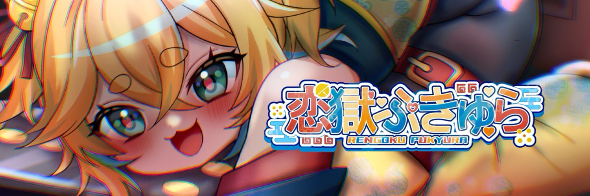
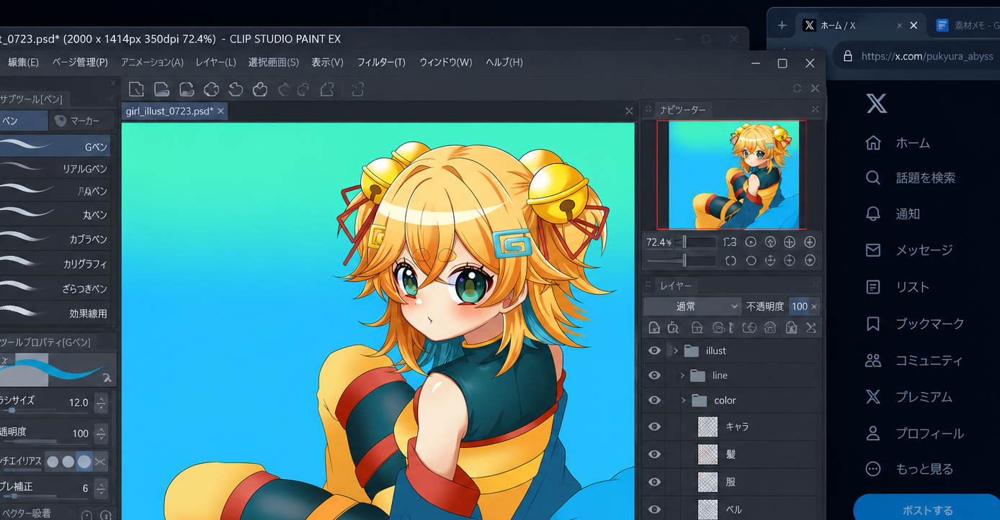

私のことは今日から 恋獄・アルティメット・ぷきゅらと呼んでくださいッッッッ‼️‼️😎😎😎
📌 固定

@rengoku_pukyura
一般ガチ恋夢女子です💘A.K.I.🐍 推しに見合う自分になるため修行中👊 ぷきゅちゃんの体をかりて喋ってるただの女です、
📌 固定
私のことは今日から 恋獄・アルティメット・ぷきゅらと呼んでくださいッッッッ‼️‼️😎😎😎
私もポケパークに行ってヒマナッツのぬいぐるみをジョーイさんに回復してもらいたいッッッッ‼️‼️😡😡😡
きのーこさんにかいた猫のアイコンすごくかわいいッッッッ！！！！！！
昔描いた絵を整理してるッッッ
フォルダぐちゃぐちゃすぎる😭😭😭
